Budget
Zwitserland is het duurste land ter wereld. Om je portemonee te besparen hebben we de volgende tips:
- Koop zoveel mogelijk in de supermarkt en vermijd restaurants.
- In zwitserland kan je veel gratis activiteiten doen (wandelen, fietsen, zwemmen, muzea, ...). Op de activiteiten pagina kan je activiteiten vinden en hun prijs.
- Gebruik het openbaar vervoer. Zwitserland heeft een goed treinnetwerk. Met een interrail pas kan je een dag lang zoveel als je wilt de trein nemen (doorheen Europa). Dit is zeer aantrekkelijk voor internationale reizen.